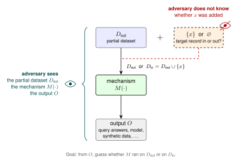
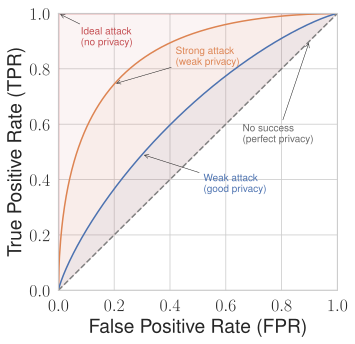
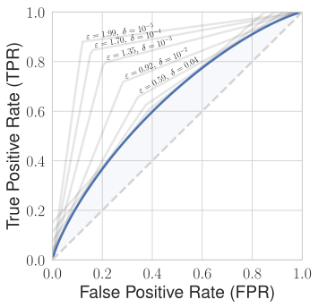
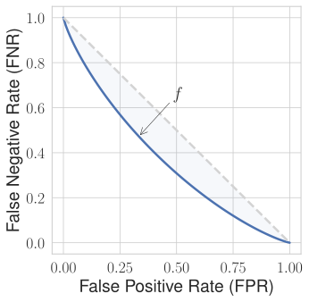

From (ε,δ) to attack risk: Hypothesis testing and f-DP
This blog post was co-authored by Bogdan Kulynych and I. It's part of a foundational series on differential privacy. Check out the table of contents to see the other articles!
Imagine that you need to release a model trained on your organization’s sensitive data. You want to use differential privacy, because you know this is the most reliable and future-proof way to protect the data. Except that your data protection officer requires that re-identification risk due to the model release is at most “0.09” — whatever that means — because it’s what the guideline they’re using suggests… How do you reason about such operational risks in differential privacy, if all you know is that you have \((\varepsilon,\delta)\)-DP with \(\varepsilon=2\) and \(\delta =1{0}^{-5}\)?
This series of blog posts gives you practical tools to answer that question. We introduce a notion of privacy known as \(f\)-DP, explain how it translates into the success rates of concrete attacks, and show how to use it to set the DP parameters.
Modeling risk
To properly reason about any kind of attack risk, we have to clearly specify an attacker model. A common approach is to clarify the attacker’s goals, their knowledge, and their capabilities. There are many potential attacks. It is convenient to start with membership inference attacks for theoretical reasons, so that’s what we’ll focus on in this blog post. In the next one, we’ll expand to other kinds of attack risks.
In membership inference, the adversary’s goal is to tell whether a given individual’s record was part of the training dataset or not, after observing the output of our mechanism. This looks like this:

This attacker is commonly referred to as the strong adversary: as shown in the diagram above, they know and are capable of many things:
- They know our randomized mechanism \(M\), and can run it on any input.
- They know the target record \(x\).
- They know the entire dataset we use, and can even choose it ("poison" it, in security jargon). The only thing they don’t know is whether the target record was added to the dataset. We denote this partial dataset without the target record as \({D}_{out}\).
- They can observe the output \(O\) of our mechanism (e.g., released query outputs, a trained machine learning model, synthetic data, etc.).
From the adversary’s point of view, the output \(O\) was produced in one of two ways: either the mechanism ran on the partial dataset \({D}_{out}\) alone, or it ran on the partial dataset together with the target, \({D}_{in}={D}_{out}\cup \{x\}\)1. Their goal is to guess which of the two happened by observing \(O\). The only thing that stands in the adversary's way is the randomness of the mechanism, which injects some inherent uncertainty.
This adversary may seem overly strong but this is intentional: this captures exactly the adversary that is implicit in the definition of differential privacy. A mechanism that is safe against this adversary — which is exactly what differential privacy gives us — is also safe against any weaker, more realistic attacker.
Membership inference as hypothesis testing
Within this model, the best the attacker can do is to act as if they were a scientist. They have an observation (the output \(O\)), and there are two possible alternatives that could explain that observation. What would a scientist do? They would run something called a hypothesis test, and compare the likelihood of two hypotheses.
-
Null hypothesis (H0): The target record was not part of the dataset. Formally:
$$O \sim M(D_{out}).$$ -
Alternative hypothesis (H1): The target record was part of the dataset. Formally:
$$O \sim M(D_{in}).$$
An attacker's test looks at the observed output \(O\) and says either “the target was in the dataset” or “it was not”. We can model a test as a function \(\phi (O)\) that outputs 1 in the first case and 0 in the second.
When the attacker makes a guess, there are four possible outcomes:
| Attacker guesses “out” (H0) | Attacker guesses “in” (H1) | |
|---|---|---|
| Record is out (H0) | True negative (TN) | False positive (FP) |
| Record is in (H1) | False negative (FN) | True positive (TP) |
As our mechanism is randomized, over the randomness of the coin flips in the mechanism, these four events translate into four standard quantities that correspond to either success or error rates:
-
True positive rate (TPR), also called the test's power: how often the test says "in" when the target record actually was in the dataset. Formally:
$$ \textrm{TPR} = \mathbb{E}_{O \sim M(D_\textrm{in})}[\phi(O)]. $$ -
False positive rate (FPR), also called the test's size: how often the test says "in" when the target record was not in the dataset, i.e., how often it raises a false alarm. Formally:
$$ \textrm{FPR} = \mathbb{E}_{O \sim M(D_\textrm{out})}[\phi(O)]. $$ -
True negative rate (TNR): how often the test says "out" when the target record actually was not in the dataset. Formally:
$$ \textrm{TNR} = \mathbb{E}_{O \sim M(D_\textrm{out})}[1 - \phi(O)]. $$ -
False negative rate (FNR): how often the test says "out" when the target record actually was in the dataset, i.e., how often the attack misses. Formally:
$$ \textrm{FNR} = \mathbb{E}_{O \sim M(D_\textrm{in})}[1 - \phi(O)]. $$
What do we mean by “how often” here? To evaluate such attacks in practice, we measure rates over many different target records. But in this theoretical analysis, the dataset and the target are both fixed. The rates are only over the randomness of the mechanism alone, i.e., over hypothetical re-runs of the mechanism with different random seeds.
To have the full picture of the performance of the attack, i.e., all four quantities, it is sufficient to know only two of them, as \(\textrm{TNR}=1–\textrm{FPR}\), and \(\textrm{FNR}=1–\textrm{TPR}\). A common approach is to only look at TPR and FPR, so let us focus on these two measurements for the moment.
In terms of TPR and FPR, the adversary wants to detect membership as often as possible (high TPR) while raising as few false alarms as possible (low FPR). These two goals are in tension: a test that always says "in" has a perfect TPR, but also an FPR of 100%. So the right question is: for a given rate of false alarms (FPR), what is the highest power (TPR) any test can achieve? Plotting the answer for every FPR gives a curve called the receiver operating characteristic (ROC) curve, a visual summary of how good a binary test is.
The higher the ROC curve, the more successful the best attack is, and the higher is the privacy risk:

From DP to attack success
At this point, we know how to model one standard threat (membership inference attack) and how to measure its risk (the ROC curve). How do we derive such a curve from \((\varepsilon,\delta)\)-DP?
Seminal work from 2015 showed that if a mechanism is \((\varepsilon,\delta)\)-DP, then the TPR and FPR of any such attack must satisfy the two following bounds:
This gives us a worst-case ROC curve for an (ε,δ)-DP mechanism, composed of two line segments corresponding to these two equations. Here’s an example with \(\varepsilon =2\) at \(\delta =10^{-5}\).
![The figure shows the worst-case ROC curve implied by a single differential
privacy guarantee with epsilon two and delta ten to the minus five, with true
positive rate on the y axis and false positive rate on the x axis. The curve
rises steeply from the origin to a true positive rate near ninety percent at a
false positive rate of about ten percent, then climbs in a straight line to the
top-right corner. The shaded region beneath it marks the possible error rates of
attacks. A dashed line corresponds to trivial attacks, and the top-left corner
corresponds to an ideal attack.](images/tradeoff-intro.svg)
The plot suggests a guarantee that seems quite weak: the adversary can achieve a TPR close to 90% at FPR of about 10%, which seems like a fairly strong attack. But for some mechanisms that satisfy the same guarantee, the bound is loose: no attack — not even by the strong adversary — actually achieves such a high TPR at this FPR! Why is that the case?
This typically comes down to having more information about our mechanism. For example, let’s suppose that the mechanism above, satisfying \((\varepsilon,\delta)\)-DP with \(\varepsilon=2\) and \(\delta=10^{-5}\), is a Gaussian mechanism. This mechanism doesn’t satisfy just a single \((\varepsilon,\delta)\) pair: decreasing \(\varepsilon\) yields a larger \(\delta\), and vice-versa. For example, our mechanism also satisfies \((\varepsilon',\delta')\)-DP with \(\varepsilon'=1.7\) at \(\delta'=10^{-4}\) or \((\varepsilon'',\delta'')\)-DP with \(\varepsilon''=0.59\) at \(\delta''=0.04\). These two give us different bounds on the ROC curve, and both bounds are valid at the same time!
By doing this for many values of \(\varepsilon\) and \(\delta\), we can combine all these bounds to get a much better overall bound:

Implicitly, we’ve used the mechanism’s privacy profile: a function that gives the smallest possible \(\delta\) for every \(\varepsilon\), or vice versa. We then converted it into the blue line above: the “real” ROC curve of membership inference attacks against our Gaussian mechanism. As we can see, this mechanism turns out to be much more private than what we initially thought when we only knew of a single (ε,δ) guarantee!
This is exactly the idea behind \(f\)-DP, defined in a 2019 paper. Instead of describing the privacy of a mechanism with just ε and δ, this DP variant describes it with the entire blue curve, and the \(f\) “parameter” is a function that defines this curve.
There is one convention to keep in mind. The function \(f\) is not the ROC curve itself, but its mirror image: \(f(\alpha)\) is the lowest false negative rate (FNR, which is 1-TPR) that an attack with FPR of \(\alpha\) can achieve:

A mechanism satisfies \(f\)-DP if no membership inference attack by the strong adversary can have a TPR higher than the one given by \(1-f\) or, equivalently, an FNR lower than the one given by \(f\). Formally, either of the two following properties must be satisfied.
By design, \(f\)-DP can capture the ROC curve more precisely than a single (ε,δ)-DP guarantee can, as it is more expressive. For some mechanisms, such as the Gaussian mechanism and its compositions, we can even compute the optimal \(f\)-DP curve exactly: the strong adversary has an attack with the error rates exactly on the curve.
The fact that \(f\)-DP captures the guarantees of a mechanism more precisely than \((\varepsilon,\delta)\)-DP is not a unique feature. An \(f\)-DP curve contains the same information as the set of all \((\varepsilon,\delta)\)-DP guarantees of a mechanism, i.e., the privacy profile, and the distribution of the privacy loss random variable. We can convert between these representations in a lossless way, e.g., from privacy profile to \(f\)-DP using the formulas above.
Why define a new notion then? As we’ve seen in this post, \(f\)-DP more directly translates to attack risk than e.g. the privacy profile. No need for additional calculations: we can just look at the curve to see the TPR and FPR of attacks. At the same time, the privacy profile is often easier to compute, so we typically start from it and then convert it to the \(f\)-DP curve to quantify attack risks.
Conclusion
In this post, we defined the standard threat model for membership inference, and saw that \(f\)-DP describes the risk of this attack exactly, and far more precisely than a single (ε,δ) pair. In the next post, we will extend this to other standard threats.
-
This model corresponds to add-or-remove-one neighbourhood relation. The attacker model is slightly different for other relations. ↩